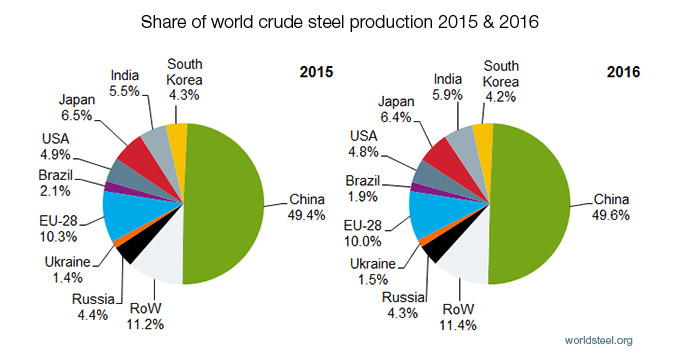
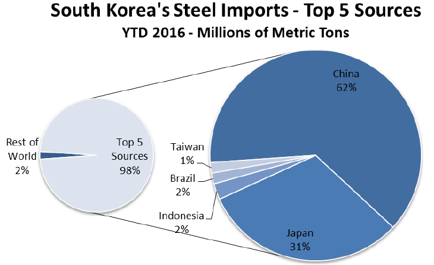
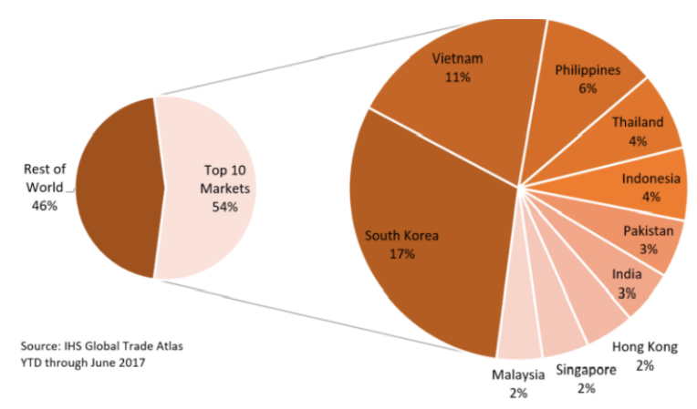

문재인 때문에 미국이 한국 철강에 고율 관세를 ? 댓글에 속지 마세요.
게시: 2018-02-18T14:01:56+09:00
4줄 요약
1. 미국 상무부가 고율의 철강 관세를 준비 중인데 같은 동맹인데도 일본은 빠지고 한국은 대상에 올랐음.
2. 보수 댓글부대에서는 이 모든게 문재인의 친북 친중 성향 때문이라고 씹고 있음.
3. 실제로는 전혀 그렇지 않고 한국이 중국에서 철강을 잔뜩 수입하여 가공한 뒤 미국에 수출한다는 의심을 받기 때문임.
4. 결국 문재인이 아니라 중국산 철강을 많이 쓰는 국내 기업들 때문임.
다음과 같은 제목의 연합뉴스 기사가 오늘 아침 많이 읽힌 기사로 떴더군요.
"같은 동맹인데도…일본 빠지고 한국만 232조 고율 관세"
핵심 내용을 1줄만 뽑으라면 아마 아래 1줄일 것입니다.
"미국 상무부가 발표한 '무역확장법 232조' 철강 조사에서 주목할 점은 53%의 높은 관세를 부과할 대상으로 지목한 12개 국가에 한국이 포함된 것이다."
이 기사는 미국 상무부의 철강 수입 관련 국가별 고율 관세 부과 권고안에 대한 내용입니다. 아직 확정된 것은 아니고 상무부의 권고안에 불과합니다. 현대 한국 사회에는 정말 기사가 넘쳐나서 대형 포털에서 뽑아주는 기사만, 그것도 내용은 안 보고 제목만 보는 사람들이 많습니다. 이 기사를 보고 제가 처음 받은 느낌은 '미국이 일본은 진짜 동맹국으로 잘 대해 주지만 한국은 진짜 동맹으로는 생각 안 한다'라는 것이었습니다. 요즘 맹활약 중인 보수 댓글 부대도 같은 생각을 했나 봅니다. 공감 순위에서 몇 개 상위 랭킹된 댓글을 보면 아래와 같습니다.
북괴한테 놀아나니 그러지ㅉㅉ
"그 새x"가 그렇게 북한 좋아하는데 잘해주고 싶겠누 ㅋㅋ
난 국민들도 답답한게 문죄인이 친북성향인거 아시면서 왜 문죄인 뽑으셨어요?? 이젠 더이상 이대로 나라를 북한한테 뺏길순없습니다. 문죄인 탄핵 갑시다!
댓글 부대의 주장을 요약하면 "문재인의 친중, 친북 정책 때문에 미국이 한국을 못 믿게 되었다, 그래서 무역도 망하게 되었다" 정도가 될 것입니다.
이것이 사실일까요 ? 미국에 대해 흑자를 올리는 대표적 국가들인 독일과 일본은 저 고율 관세 대상에서 제외된 것은 확실히 이상하게 보이는 일이긴 합니다. 독일과 일본은 100% 미국에게 충성하기 때문에 제외시켜주었고, 친중 성향을 보이는 한국은 저 고율 관세 대상국에 포함시킨 것일까요 ? 더 직접적인 질문으로서, 만약 지금도 503이나 홍준표가 대통령으로 대한민국을 통치하고 있다면 한국도 제외시켜 주었을까요 ?
결론적으로 아닙니다. 다들 공감하시겠지만, 미국 상무부는 한국 내의 정치 성향이나 보수-진보 대립 등에 대해서 관심이 1도 없습니다. 문제는 중국과 돈이지요. 그리고 왜 일본이나 독일은 빠지고 한국은 중국, 베트남 등과 함께 저 불길한 리스트에 포함되었는가에 대한 정답도 저 기사에 포함되어 있습니다. 다만 제목에 안 쓰여있다보니 사람들이 주목하지 않을 뿐이지요. 몇가지 fact를 보겠습니다.
Fact 1. 대미 철강 수출 1위는 캐나다, 2위는 브라질, 3위는 한국
4위는 멕시코, 5위는 러시아, 6위는 터키입니다. 일본은 7위로서, 전체 수입량의 5%에 불과합니다. 독일은 8위입니다. 따라서 철강 측면에 있어서는 일본과 독일이 빠지고 한국이 견제 대상에 들어간 것은 이해가 가는 일입니다.
Fact 2. 세계 철강 수입량 1위는 미국, 2위는 독일, 3위는 바로... 한국 !
미국이나 독일이 철강 수입이 많은 것은 이해가 갑니다. 한국도 제조업 강국이니 철강 수입이 많은 것이 이해가 갑니다. 그러나 한국은 미국에 철강 수출을 잔뜩 하면서 정작 자신은 철강이 부족하여 대량으로 수입을 하고 있습니다. 어떻게 보면 이해가 가지 않는 일입니다.
Fact 3. 한국은 중국의 징검다리 ?
특히 문제는 한국이 어느 나라에서 철강을 수입하느냐 입니다. 바로 중국입니다. 그것도 무려 62%의 절대량을 중국으로부터 수입하고 있습니다. 누가 봐도 중국이 한국을 철강 수출의 중간 거점으로 삼고 있다고 생각하기 딱 좋은 상황입니다. 물론 실제로는 그렇지 않다고 우린 주장합니다. 철강 제품에도 고급품과 저가품, 고장력 강판과 H빔, 철근류 등 다양한 종류가 있습니다. 한국은 고부가가치의 제품을 수출하고 저가품을 수입하여 나름 현명한 철강 산업 전략을 짰다고 볼 수도 있습니다. 하지만 미국 입장에서는 그 변명이 잘 먹히지 않을 수 있지요. 한국이 중국에서 수입을 하지 않았다면 대미 수출용 강판을 저렇게 집중으로 생산할 이유도 없었을 것입니다. 자체 소비용 H빔이나 철근류 생산하기도 바빴을테니까요.
Fact 4. 미국 vs. 중국
하지만 가령 12위인 베트남이 저 리스트에 낀 것에 비해, 일본과 독일이 빠진 것은 이해가 가지 않는 일입니다. 이유는 동맹국과 잠재적 적성 국가에 대한 차별일까요 ? 한국은 정말 문재인 때문에 잠재적 적성 국가로 분류된 것일까요 ?
아닙니다. 결국 철강 관세 문제의 핵심은 중국입니다.

(중국의 위용, 출처 : https://www.worldsteel.org/media-centre/press-releases/2017/world-crude-steel-output-increases-by-0.8--in-2016.html )
이미 2017년 12월에 미국은 베트남산 냉연강판에 대해 500%가 넘는 관세를 부과하기로 했습니다. 이유는 간단합니다. 미국 철강회사들이 2016년도에 베트남이 중국산 철강류를 수입하여 간단한 공정 처리만 한 뒤 베트남산 철강으로 미국에 수출을 하고 있다며 불만을 제기했기 때문입니다. 생각해보면 세계 철강 생산의 거의 절반을 차지할 정도로 철강 강국인 중국이 미국에 수출을 거의 하지 못하고 있습니다. 이는 물론 미국이 중국을 견제하기 때문입니다. 그리고 중국은 그 견제를 피하기 위해 갖은 수를 다 쓰고 있습니다. 그 대표적인 수법이 베트남 등 제3국을 이용한 우회 수출입니다.
독일의 철강 수입국 1~5위는 벨기에, 이탈리아, 프랑스, 네덜란드, 오스트리아입니다. 중국은 없습니다. 일본의 철강 수입국 1~3위는 한국, 중국, 대만입니다. 그러나 한국이 60%, 중국이 20%, 대만이 18%로서, 중국제 철강의 비율이 압도적이지는 않습니다.
그에 비해 한국의 철강 수입국 1~3위는 중국, 일본, 인도네시아인데, 중국이 무려 62%, 일본이 31%, 인도네시아는 2%에 불과합니다.

(출처 : https://www.trade.gov/steel/countries/pdfs/2016/q2/imports-korea.pdf )
위에 인용한 연합뉴스 기사에도 아래와 같이 제대로 된 분석을 하단에 실었습니다. 댓글 부대가 엉뚱한 소리를 해대는 것 뿐이지요.
"산업통상자원부 관계자는 "원인을 분석하고 있지만 대미 수출이 많으면서 중국산 철강을 많이 수입하는 국가들이 포함된 것 같다"고 말했다. 232조 조사의 취지가 중국을 겨냥한 만큼 중국 철강산업의 저가 수출에 기여하는 국가를 수입규제 대상에 포함했다는 분석이다."
Fact 5. 그래도 문재인이 미국에 잘 보였다면 한국이 리스트에서 제외되지 않았겠는가 ?
아닙니다. 가령 멕시코 대통령은 트럼프와 사이가 좋다고 할 수 없습니다. 하지만 멕시코도 이번 미상무부 리스트에 들지 않았습니다. 이유는 무엇일까요 ? 멕시코도 대미 철강 수출국 4위에 오를 정도로 많은 철강을 미국에 수출합니다만, 정작 멕시코는 한국과는 달리 철강 순수입국입니다. 그리고 그 주요 수입국은 1위 미국 (40%), 2위 일본 (17%), 3위 한국 (11%), 4위가 중국 (6%)입니다. 중국제 철강을 들여다 가공해서 미국에 수출한다고 볼 수 없는 나라입니다. 멕시코가 리스트에 오르지 않은 이유는 결국 중국과는 무관하기 때문입니다.
Fact 6. 정말 우리나라가 중국제 철강류를 가공하여 미국에 수출하는 셈인가 ?
모르겠습니다. 저는 위에서 써 놓은 것처럼, 아니라고 생각합니다. 다만, 미국이 콕 찍어 중국산 철강류의 우회 수출국이라고 지목한 베트남의 경우, 중국산 철강류 수입을 세계에서 두번째로 많이 하고 있습니다. 전체 중국산 철강 수출의 11%를 베트남이 수입하지요. 3위는 필리핀, 4위는 태국, 5위는 인도네시아 등으로, 일본이나 독일 등은 10위 안에 끼지 못합니다. 과연 중국산 철강 수출의 17%를 수입하여 중국을 철강 수출 강국으로 만드는데 혁혁한 공을 세우고 있는 나라는 어디일까요 ? 바로 대한민국입니다. 진실은 제가 잘 모르겠고, 굳이 캐내고 싶지 않습니다. (저 같은 일개 비전공 취미 블로거에게는 무리... ) 그러나 이런 상황에서 미국이 한국을 중국산 철강의 우회 수출국으로 의심하지 않는다면 매우 이상한 일일 것입니다.

(중국의 10대 철강 수출국, 출처 : https://www.snmnews.com/news/articleView.html?idxno=384809 )
이게 문재인 탓일까요, 아니면 중국산 철강을 사다 쓰는 국내 건설사, 철강 회사, 가전업계, 자동차 회사 등의 탓일까요 ?
우리나라 보수 댓글부대가 항상 진실을 오도하는 것도 문제지만, 그런 가짜 뉴스에 가까운 댓글이 판치는 포털 뉴스 시스템에도 문제가 있다고 저는 생각합니다. 하지만 결국은 그런 댓글에 쉽게 영향을 받는 우리 자신이 문제일 수도 있겠지요.
Source : https://www.ft.com/content/a85fa9fc-1340-11e8-8cb6-b9ccc4c4dbbb
http://money.cnn.com/2017/12/06/news/economy/us-steel-vietnam-china-tariffs/index.html
https://www.worldsteel.org/media-centre/press-releases/2017/world-crude-steel-output-increases-by-0.8--in-2016.html
https://www.snmnews.com/news/articleView.html?idxno=384809
https://www.trade.gov/steel/countries/pdfs/imports-us.pdf
https://www.trade.gov/steel/countries/pdfs/2016/q3/imports-japan.pdf
https://www.trade.gov/steel/countries/pdfs/2016/q2/imports-korea.pdf
https://www.trade.gov/steel/countries/pdfs/imports-germany.pdf